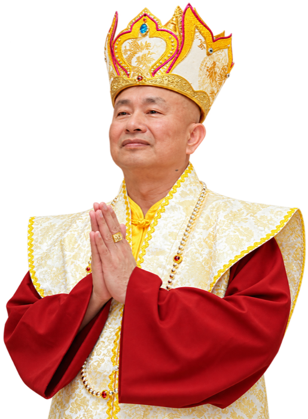

Root Guru · 根本上師
His Holiness Living Buddha Lian Sheng蓮生活佛 盧勝彥
Grandmaster Sheng-Yen Lu — founder of the True Buddha School, author of over three hundred books, and the root guru through whose blessing this sutra is taught and shared.
Early life
His Holiness Living Buddha Lian Sheng was born Sheng-Yen Lu in 1945, in Chiayi, Taiwan, into a family that knew real poverty and hardship. He worked his way through a surveying degree and served as an officer, living an outwardly ordinary life — until an afternoon that would change it entirely.
At twenty-six, accompanying his mother to a Taoist temple, his divine eye was opened in a sudden and overwhelming spiritual experience: the heavens revealed themselves, and he was shown that he was to cultivate the path and teach. From that day the invisible world never closed to him again.
Training and lineages
What followed were years of intense cultivation across traditions — Christianity in his youth, then Taoism, Zen, Sutrayana and finally Tantrayana Buddhism — studying under accomplished teachers of each. He received empowerments and transmission in all four major lineages of Vajrayana Buddhism: the Nyingma, Sakya, Kagyu and Gelug schools.
Through decades of actual practice he attained realization, and is revered by his students as an emanation of Amitabha Buddha — a Living Buddha who teaches from direct experience of the Dharma rather than from books alone.
Born in Chiayi, Taiwan
A childhood of poverty that would later give his teaching its unsparing compassion for ordinary suffering.
The opening of the divine eye
A visit to a temple with his mother becomes a revelation; he begins cultivation under his first teachers.
Moves to Seattle, USA
He settles in Washington State and establishes the seat of what becomes the True Buddha School.
Monastic ordination
He is ordained as a monk and founds Ling Shen Ching Tze Temple in Redmond — mother temple of the school.
A worldwide sangha
Over three hundred temples, chapters and centers across the world; ceremonies that gather tens of thousands; teachings translated into many languages.
Writings and teaching
His Holiness has written roughly three hundred books in Chinese — commentaries on the sutras and tantras, records of spiritual journeys, and plain-spoken guidance for cultivators — with many translated into English, Spanish, French, Vietnamese and other languages. He continues to write daily and to teach weekly, expounding sutra after sutra before assemblies in person and online.
It is in these very teachings that the Sutra of the Sea Dragon King was singled out and praised: The Dragon King Sutra is truly excellent — because it harmonises the Eight Classes of Heavenly and Dragon Beings.
This website is offered in that spirit.
The name Lian Sheng
“Lian Sheng” (蓮生) means born of the lotus. To his students he is simply Shizun (師尊) — the revered teacher — or Grandmaster Lu. As the root guru of the True Buddha School he embodies the Triple Jewels for his disciples: the source of the lineage's blessing, empowerment and guidance.
Whoever sincerely takes refuge receives that transmission — and enters a stream of practice that leads, as this sutra itself promises, toward the realization of one's own true nature.